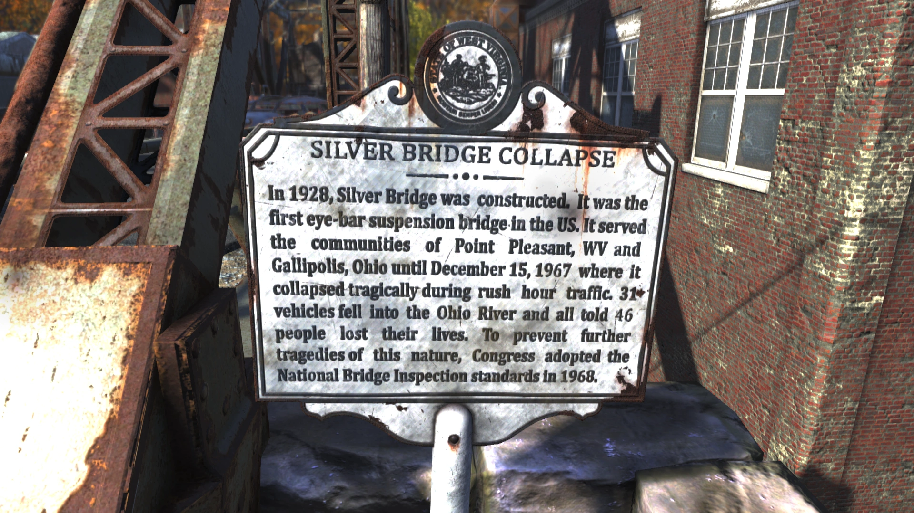
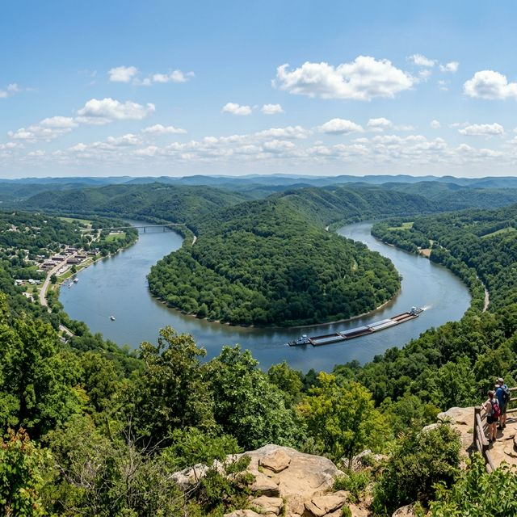
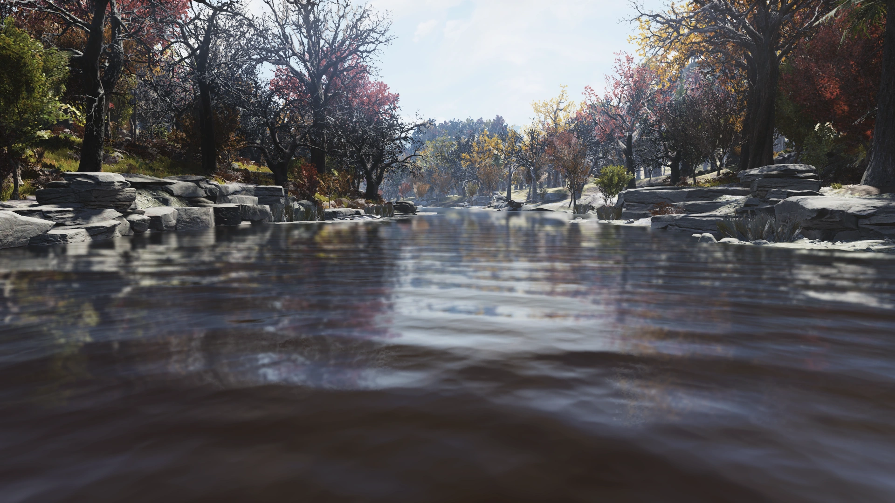
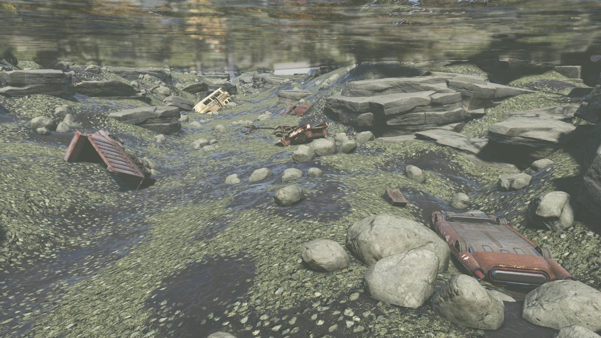
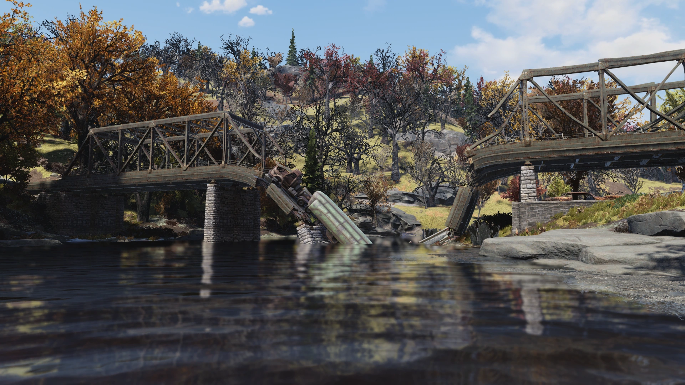

Ohio River
オハイオ川
概要
オハイオ川は、『Fallout 76』に登場する非マーク地点のロケーションです。
かつてのアメリカ合衆国のオハイオ州とウェストバージニア州の間を流れる川であり、アパラチア地域の西の境界線を形成しています。
『Fallout 76 Vault Dweller's Survival Guide』のアパラチア地図帳によると、森林地帯の北西部分はこの曲がりくねったオハイオ川に沿っており、アパラチアの西端を形成する主に森林と山岳地帯で構成された地域とされています。
背景

オハイオ川は、アレゲニー川とモノンガヒラ川がピッツバーグで合流して形成されます。
この合流点はアパラチア地域の北方に位置し、オハイオ川はそこから南へと流れ、かつてのオハイオ州とウェストバージニア州の州境として機能しています。
シルバーブリッジ前の銘板にはオハイオ川の名が記されており、橋の崩落とその後の経緯が詳述されています。
大戦以前、この橋はオハイオ川を渡り、ガリポリスの町とポイント・プレザントを結ぶ交通路として機能していました。
備考
- オハイオ川沿いには見えない壁が存在し、バーニング・スプリングスの東端から森林地帯にかけてこの2つの地域を分断しています。
このため、現在ファストトラベルを使わずに2つの地域間を移動するには、ポイント・プレザントのシルバーブリッジを使用するか、橋の周囲を直接迂回する必要があります。 - 開発者によると、この壁はいずれ撤去される予定ですが、現時点では将来のコンテンツのために維持されています。
Bethesda Game Studiosの公式Discordでレベッカ・バッセル氏は「マップの端に見えている境界は、ローンチ時の境界です。
内幕を少しお話しすると、マップにスペースを追加する方が、新コンテンツのために制限したり取り除いたりするよりもはるかに簡単です。
誰かがクールなC.A.M.P.を建てた場所を、新コンテンツのリリース時にブルドーザーで潰すようなことは絶対にしたくありません。
そこに何かをリリースするかもしれないし、しないかもしれない。ウエイストランドは常に変化するものですから！」と述べています。
登場作品
オハイオ川は『The Pitt』および『Fallout 76』に登場します。
舞台裏
ゲーム内のオハイオ川は、現実世界の同名の川をモデルにしています。
現実のオハイオ川はオハイオ州ガリポリスとウェストバージニア州ポイント・プレザントの間を流れています。
シルバーブリッジの崩落と記述されている詳細も、1967年12月15日に実際に起きたシルバーブリッジの崩落事故に基づいています。
現実世界のオハイオ川

オハイオ川はアメリカ東部を代表する大河の一つで、全長は約1,579km（981マイル）に及びます。
ペンシルベニア州ピッツバーグでアレゲニー川とモノンガヒラ川が合流して形成され、イリノイ州カイロでミシシッピ川に注ぎます。
「オハイオ」の名はセネカ族の言葉「Ohi:yo'」に由来し、「美しい川」「良い川」を意味します。
フランスの探検家たちも「La Belle Rivière（美しい川）」と呼んでいました。
オハイオ川はペンシルベニア州、オハイオ州、ウェストバージニア州、ケンタッキー州、インディアナ州、イリノイ州の6つの州を流れるか、州境を形成しています。
流域は14の州にまたがり、500万人以上に飲料水を供給しています。
主な支流としては、南からテネシー川（流域面積・全長で最大の支流）、カンバーランド川、カナー川、ビッグサンディ川、リッキング川、ケンタッキー川、グリーン川が注ぎ、北からはマスキンガム川、マイアミ川、ウォバッシュ川、サイオト川、アレゲニー川、モノンガヒラ川が合流します。
Fallout 76のアパラチアを流れるカナー川もオハイオ川の支流の一つです。
歴史的には、18世紀にフランスとイギリスの植民地勢力がオハイオ川流域の支配権をめぐってフレンチ・インディアン戦争を引き起こしました。
また、南北戦争以前には自由州と奴隷州の境界線の一部として機能し、隷属された人々にとって自由の象徴でもありました。
現在もオハイオ川は石炭や石油、工業製品を輸送する重要な商業水路として利用されており、アメリカ陸軍工兵隊によって管理される20のダムで流れが調整されています。
オハイオ川流域には2,500万人以上が暮らしています。
ギャラリー





オハイオ川は、Fallout 76のマップの「端っこ」を定義する存在ですね。
ゲームを遊んでいるとポイント・プレザント付近で川岸に辿り着くと、そこから先は行けない見えない壁がある——というのはプレイヤーなら誰もが経験していることだと思います。
でもこの記事を調べてみると、開発者がわざわざ将来の拡張を見据えて「スペースを追加する方が簡単だから」と壁を残していたという裏話が興味深いです。
Burning Springsアップデートで実際に西へ拡張されましたし、Bethesdaのこの設計思想がしっかり実を結んだ形ですね。
現実のオハイオ川がアメリカ史において州境・自由の象徴・商業水路として果たしてきた役割を知ると、Fallout世界でもアパラチアの「境界線」として機能しているのが、現実をうまくゲームに落とし込んでいるなと思います。
川底に転がっている車両の残骸を見ると、大戦前にこの川を渡ろうとして力尽きた人々がいたのかな…と想像してしまいますね。
This article was created by translating and editing Ohio River from Nukapedia: The Fallout Wiki.
Licensed under the Creative Commons Attribution-Share Alike License (CC BY-SA 3.0).
コミュニティ維持のため、寄付を受け付けております。
> COMMENTS